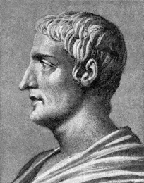
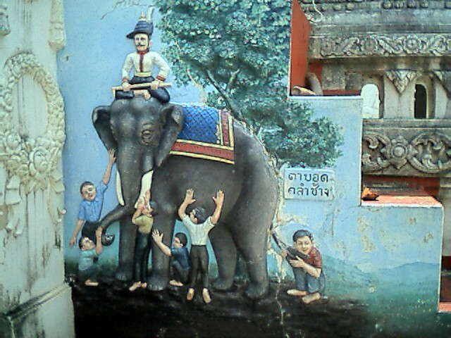

![]()
use_roadmap(
c("論点提示", "部屋の中の象", "盲人と象", "自問する象", "参考文献"),
style = "progress",
active_bg_color = "#C62828"
)論点整理・コメント 探究学習と大学での学び
思想史から問い直す探究のあり方、高大接続のあり方
人の知的活動も畑と同じである。種をまき、長い時間をかけて手を入れれば、さまざまなものを育てることができる。だが、私たちがより好むのは、おのずから生まれたものである。

Ⅰ. はじめに——論点提示
自己紹介
- 専門：政治思想史
- 18世紀イギリスの議会政治：レトリック受容と新興メディア
- 所属：高大接続コア・センター
センターでの企画・業務
- 高大接続リーディング・セミナー; 本で拓く探究ワークショップ; 高大接続ラウンドテーブル; 高大接続に関わる追跡調査 1
1 苅谷 他 （2026）
その他
- 前任校（公共政策系）において「PBL（問題解決型学習）」や初年次教育に長く携わる
探究をめぐる、私が経験したモヤモヤ
- あるワークショップでの高校の先生
- 「生徒が、私にも読めないような分厚い本をしっかり読んで探究学習に取り組んでいる。見方によっては本をまとめているだけに見えるが、簡単なことを行なっているようにはとても思えない。華々しい実験だけが評価されるのはおかしいのではないか」
- あるワークショップでの生徒
- 「大人が解決できないような問題を、高校生が解決できるわけないよね笑」
- ポスターセッションにおいて他校の生徒に質問する高校の先生
- 「先行研究がもうあるんじゃないの？」
問題の所在
- 高校と大学の埋めがたいギャップ
- 探究学習の文脈において、高大接続は案外、正面切っては論じられない
- 探究学習の「研究」化（高橋 （2020））
- 2020年になされた指摘（警告）が依然、放置されている
- 探究で頑張った生徒は、大学でも頑張る、は検証を要する仮説（願望？）
- 探究学習の経験は大学でどう活きるのか（プレゼンテーション能力など、目に見えやすいアカデミック・スキルだけ？）
- 現場の高校の先生の声が大学教員に届いていない（のでは？）Cf. 酒井 （2026）
2 IDE大学セミナー「 「探究」と「研究」は、なにが異なり、どのようにつながるのか」（2026年8月開催）は、貴重な例外であり、報告者の問題意識と重なる
大学4年次3月時点での意識調査：探究活動で育成された資質・能力
- 令和4年（2022年）入学者対象（回答率：3.2％）

大学4年次3月時点での意識調査：探究学習に熱心に取り組みましたか？ × 大学生活の中で、どのくらい力を入れてきましたか

問題の所在 > 高大接続の難しさ
高校の先生方が「大学受験が一番大事」「いろいろ我慢しても、大学にとにかく入れ」「大学に入ったら好きなことをして」と言うことが駄目だという話を実証的に示すために、この調査〔「10年トランジション調査」〕を始めたわけです。たくさん我慢して大学生になっても、それまでにしてこなかったことは大学生になってもできない。大学でいろいろと育てようと思っても、学生自身にその意欲がないのです。そういうマインドセットは、高校までにしっかりと出来上がっていて、キャリア意識も大きいです。自分が成長しようと端から思っていない（溝上 （2023））
問題の所在 > 探究学習の「研究」化
学会発表，論文執筆，論文投稿，コンテスト入賞など，推薦入試で求められる探究学習の内容は，学習指導要領の内容を遥かに超える（高橋 （2020）, 42）
先端的な科学研究，学会発表や論文執筆は，本来大学教育で行う内容ではないかという疑問も残る。「探究」ではなく「研究」が行われるようになり，それを“獲得ポイント”として，大学に進学するという道筋は，自己の方向性を見つめ，社会との関わりを見出す発達段階にある高校生にとって果たして適切な教育なのだろうか（高橋 （2020）, 42）
論点
探究学習は、高大接続の「切り札」になるのか？なるとすれば、どのような条件が必要か？
Q1. 探究学習に固有の良さはどこにあるのか
Q2. 高校の「探究」と大学の「研究」はどうすれば「接続」するのか
Q3. 高校教員と大学教員はどのようなコミュニケーションが必要か
-
サブクエッション. なぜ「探究学習」は「研究」化してしまうのか
- よく指摘される要因：特別入試
- 私見：「探究」の定義そのものが、研究をモデルにしているのではないか
Ⅱ. 部屋の中の象：探究とは何か
部屋の中の象
- なぜパーティールームに象がいるのか？おかしいのに誰も問わない（問題が大きすぎると問えなくなる）の喩え
- そもそも探究とは何かが十分に問われていない
3類型
- 文部科学省「探究の学び」やそれを参照した定義
- 学術研究に準拠した定義
- 社会で必要とされる能力を意識した定義

既存の定義の類型 > 1. 文部科学省の「探究の学び」やそれを参照した定義
実社会・実生活との関わりの中で見いだす自己の興味・関心や問題意識に基づき課題を設定し、必要な知識や方略を活用し、試行錯誤しながら、課題解決を通じた新たな価値の創造を繰り返していく学習のプロセス」（教育課程部会 生活、総合的な学習・探究の時間ワーキンググループ）。
問題点
- 興味・関心 → 課題設定 → 知識・方略 → 試行錯誤 → 課題解決 → 新たな価値創造
- 探究そのものを定義するというより、「探究で何をするか」というプロセスによって探究を定義している
- プロセスとして定義することで、To Doリスト化、スケジュール化、形式化しやすい
既存の定義の類型 > 2. 学術研究に準拠した定義
「①自ら問題を発見し、②調査・観察・実験などによって事実を明らかにし、③事実にもとづいて論理的・批判的な思考・判断を行い，④導いた結論を表現したり、問題を解決したりする学習活動」（楠見，2017, p.68）。
- 学術研究のプレ体験：研究の作法を学ぶ。生徒に新規性は求めない
- （暗黙の）発達モデル：「調べ学習 → 探究学習 → 学術研究」
問題点
- より良い探究学習のモデルは学術研究であるため、探究を学術研究に近づけようとする力学が働く
- 高校に十分なリソースはなく、生徒が大学教員に直接、問い合わせる、いわゆる「探究公害」現象の要因に（特別入試はこの傾向に拍車をかける）
既存の定義の類型 > 3. 社会で必要とされる能力を意識した定義
本質的には「大人が日々社会で生きていくためのベース」を訓練しているのだと考えています。私たちは社会に出て組織で働くようになると、社会課題を解決したり、誰かの不安や不満を解消したりすることをビジネスとして展開し、その対価として生活の糧を得るようになります。この一連の「課題解決のサイクル」は、今の社会構造のなかで生きていく以上、一生やり続けざるを得ないものです。」（リクルート進学総研「探究は自ら打席に立ちバットを振るトレーニング」）
問題点
- 学習者が起点になるのか怪しい
- 文脈によって意味・適用範囲が自在に変わる伸縮自在な概念であるため、さまざまな活動を包摂できる一方、「探究」の固有性を問えない
- 「社会が解決を必要としている問題は何か」という外在的な問いが、探究の出発点になりやすい
デューイの「探究」論に立ち戻る
デューイと文部科学省の親和性
- 文部科学省：「自己の興味・関心や問題意識に基づき課題を設定」4
- C. S. パース、J. デューイ（プラグマティズム、伊藤 （2016））
- パース：疑い・不確かさが探究を引き起こす
- デューイ：問題状況の中で、何が問題なのかを明らかにしながら探究する
- → 外から与えられた課題への回答ではなく、「気になる」「何かおかしい」という経験から探究は始まる
- → 探究を人間の日常的な営みとして捉える
4 ただし、文部科学省は「自己の在り方生き方と一体的で不可分な課題を自ら発見し，解決していくような学びを展開していくことを重視している。高等学校においてこのような生徒の姿を実現するためには，生徒がより洗練された質の高い探究に取り組む必要がある」（文部科学省 （2023））など仰々しい表現を用いることもあり、意味を了解しづらい
デューイの定義
探究は生活のあらゆる領域に、そして各領域のあらゆる側面に浸透している。日常生活において、人間は物事を検証し、知的に考察し、推論し、判断する。それは、種を蒔き、収穫し、商品を生産し、交換するのと同じくらい「自然な」ことである（Dewey （2008a）, 106）
探究とは、不確定な状況を、その構成要素の区別や関係において極めて確定的な状況へと、制御または誘導的に転換し、それによって元の状況の要素を統一された全体へと変容させることである（Dewey （2008a）, 108）5
5 デューイは、不確定な状況を特徴づける際の個人的な言語表現として、我を忘れてしまう、動揺した、悩ましい、曖昧な、混乱した、相反する傾向に満ちた、不明瞭な、を挙げる（Dewey （2008a）, 109）。
- 最初のモヤモヤが、自分にとって説明可能なものになっていく
- ただし、授業で実施される「探究学習」は、なぜ納得できたのかを他人にわかるような説明がされるべき
デューイの定義
「問題」と「解決」は、まったく同時に明らかになる。それまでは、私たちの問題の捉え方は、多かれ少なかれ曖昧で暫定的なものである。うまくいかなかった最初の考えをきっかけに、目の前の状況をあらためて見直す。すると、行動が妨げられていることへの戸惑いが、具体的な状況や対象に即して、少しずつ言葉になる。単に「溝がある」ことではなく、その幅や土手の滑りやすさが問題なのである。…こうして、困惑がどこから生じているのかが、より明確になる（Dewey （2008b）, 201）。
省察的な活動が生じるあらゆる場面において、当初は状況全体に対する漠然とした感情にすぎなかったものが、知的に捉え直されていく。この転換は、何が困難を生じさせ、行動を止めているのか、その諸条件をより明確に捉えることによって生じる（Dewey （2008b）, 202）。
デューイ的に再定義された探究学習の例示
- 児童の場合
- （探究学習ではない）先生が児童に「カブトムシはなぜ夜に活動するのか、調べてみよう」と問いかける
- （探究学習）児童本人が「昨日まで夜になると動いていたのに、今日は全然動かない。なんでだろう？」と疑問を持ち、調べ始める
- 生徒（中高生）の場合
- （探究学習）近所の空き地に、ドラッグストアB店ができることになった。すでに近くにはドラッグストアA店がある。そこで生徒が、「なんでまたドラッグストアなんだろう？私はパン屋になってほしかったのに」とモヤモヤする。なぜB店がここに出店するのか？と調べ始める（社会問題を解決するための活動ではない）
デューイ的に再定義された探究学習における先生と生徒の関係
- 「教える／教わる」から「互いに知っていること、わからないことを交換し、考え合う」関係へ
- 教員は教科科目とは異なり「知っている側」である必要はない
- 生徒が「この本に書いてあることが、どうしてこうなっているのか分からない」と言ったとき、教師が答えを教えるのではなく、「私もそこは分からない。ちょっと一緒に調べてみようか」、「調べて面白いことがわかったら教えて」と言える人間関係
- 教員も、生徒から耳学問させてもらう（教師が生徒から知識を得ることを恥じない）くらいの姿勢でよいのではないか
大学教員も、すべてのことを知って学生に対応しているわけではない。特に初年次教育（専門に分かれていない）においては、知らないことも多い（ラジオの未来を考えたい、プロバスケットボールを盛り上げたい、アフリカで日本の便器を売りたい）
探究学習と研究の相違点
| 探究 | 研究 | |
|---|---|---|
| 中心にあるもの | 自分の納得 | 他者の納得 |
| 問い | 自分は何を知りたいのか | 他者にとっても意味のある問いか |
| プロセス | 調べ、考え、問い直し、自分が納得できる理解をつくる | 調べ、考え、検証し、他者が納得・検討できる知識をつくる |
| 他者への説明 | 「私はなぜこう考えるようになったのか」を伝える | 「なぜこの主張が妥当なのか」を示す |
Ⅲ. 盲人と象：探究活動の複数性
群盲象を評す
- 皆が同じものを見ているつもりで、実際には別々のものを論じていることの喩え
特定の「型」に押し込められやすい探究学習
- 探究学習は仮説を立て検証しなければならない
- 探究学習は調べるだけでなく、解決策を提案しなければならない

- 対象の特性や目的に応じて、多様な探究学習があり得る。それぞれに固有な性質を把握することが重要
「型」から外れた探究学習
- 文献調査が「調べ学習」と解されやすい6
- インタビュー調査や観察は「それで終わり？」という印象を持たれやすい
- 解決が困難な問い（自由とは何か）は「意見」であって探究ではないと解されやすい
6 本田 （2022） は、探究活動の指導における生徒と指導者（大学院生）の会話を分析し、指導者が、何が「調べ学習」で、何が「探究学習」なのか定義せずに、否定的な文脈で安易に「調べ学習」という言葉を使うこと、また、その結果、学習者が、調べれば調べるほど、何であれ先行研究が存在し、自分の探究には価値がない、自分にはできない、という袋小路に陥りやすい点を問題点として指摘する。報告者が見聞きする限り、「調べ学習」と呼ばれている活動の多くは、研究者が「文献調査」と呼ぶ研究手法に相当する。自分の興味・関心と自分の読解力レベルに見合った文献を選択することは案外難しく、また、選択した文献をまとめる作業も、単なる情報の羅列ではなく、なぜ、ある情報を選び、別の情報を選ばなかったのかを考え、（本来は）説明する義務があることを踏まえれば、決して単純な作業、受動的な作業ではない。「調べる」ことを低く評価することで、むしろ生徒の探究の可能性を狭めてしまっているのではないか。たとえば、アンケートをとることが主体的（探究学習に適した手法）で、本を読むことは受動的（調べ学習にとどまる）だとするような位置づけがあるとすれば、早急に見直したほうがよい。
探究活動の多様性とそれぞれの特徴を捉えるためのマトリックス 7 8
| 規則性の発見 | 固有性の記述 | |
|---|---|---|
| 対象となる現象の再現可能性が高い | 規則性の発見 理系：植物の成長に影響する条件 文系：SNS上の言葉が拡散する条件 |
個別の対象に固有のパターン 理系：ある植物の成長過程 文系：ある地域の人口変動 |
| 対象となる現象の再現可能性が低い | 少数事例から規則性を推論 理系的：地球史上の寒冷期・温暖期の周期性 文系的：現代日本の政権交代（3回） |
記述 理系的：ある火山の噴火過程 文系的：ある地域の水害 |
7 研究を、対象となる現象や目的・視点に応じて区分けして把握しようとする営為は、認識論や科学哲学においてなされてきた。古くはアリストテレスが対象の性質に応じて求められる精密さが異なることを論じ、ポパーは科学的知識の批判的検討可能性を重視した。近年では、たとえば、Mahoney & Goertz （2006） が、量的研究と質的研究を異なる「文化」と捉え、両者は大きな研究目標を共有しながらも、具体的な研究目的の違いによって、研究実践のあり方も異なると論じている。このような議論が探究学習に援用されず、「仮説→検証→考察」といった一律の探究学習がありうるかのような説明がなされていることは、報告者には不思議である。
8 右下のセルを代表する研究に、ブルーカラー労働者、農民、小店主、失業者、外国人労働者などにインタビュー調査したピエール・ブルデュー編著『世界の悲惨』がある。少なくとも、人文学、社会科学系の研究者がこのような研究を、「聞き取っただけ」「So What ?」と評価することはあり得ない。
探究活動の多様性とそれぞれの特徴を捉えるためのマトリックス
それぞれのセルで用いられる代表的な方法
| 規則性の発見 | 固有性の記述 | |
|---|---|---|
| 対象となる現象の再現可能性が高い | 統制実験（条件を統制できる場合）、重回帰分析（条件を統制できない場合）、分散分析、相関分析、量的テキスト分析、叙事詩（人間類型） | 比較、記述統計、クロス集計、散布図、棒グラフ、時系列グラフ |
| 対象となる現象の再現可能性が低い | 比較事例研究、プロセス・トレーシング、複数資料の比較・パターン探索 | 文献調査、観察ノート、フィールドノート、厚い記述（文化人類学者C. ギアツ「事実だけでなく、コンテクストを含めた記述」）、資料読解、インタビュー、フィールドワーク、写真撮影、映像記録 |
問いの多様性と探究の方向性のマトリックス
- 探究（研究）では、何を知りたいのかによって、探究の向かう方向が異なる
- 「何を知りたいのか」を2つの軸から考える
- 対象の数
- 対象そのものの理解 ↔︎ 抽象化・一般化
それぞれに優劣があるわけではない。探究の途中で、知りたいことが変わることもある。帰納法・演繹法と似ているが、そもそも規則性や一般化を目指さない探究（研究）もある
問いの多様性と探究の方向性のマトリックス > 探究学習のあり方について検討する高校の先生の場合
| 抽象化・一般化 | 事例の記述・比較 | |
|---|---|---|
| 複数の事例・対象 | 特定の高校という固有名詞を使わず、進学校・進路多様校などのカテゴリや、カリキュラム、教師の働きかけ、生徒の活動などを「変数」として捉える。変数間の関係や、条件と結果の関係を分析し、同様の条件でどのような結果が見込まれるのかを検討する | 複数の高校の探究活動を比較し、カリキュラム、教師の働きかけ、生徒の活動などの共通点や違いを明らかにする |
| 一つの事例・対象 | 特徴的な探究活動を詳しく調べ、その背景や成立条件を探索する。そこから他の高校にも当てはまる可能性のある関係や規則性を探り、新たな問いや仮説につなげる | 自校の探究活動を詳しく調べ、カリキュラム、教師の働きかけ、生徒の活動などを記述し、その学校固有の探究のあり方を明らかにする |
問いの多様性と探究の方向性のマトリックス > 小学生に向けて探究活動を説明する場合
| 抽象化・一般化 | 事例の記述・比較 | |
|---|---|---|
| 複数の事例・対象 | 「犬は、大きな音を怖がることがあるのかな？」図鑑を読んだり、先生や大人に聞いたりして、犬に一般的に見られる性質なのかを調べる。スヌーピーだけの特徴なのか、犬に共通する性質なのかを考える | 「スヌーピーは雷が鳴ると隠れるけど、チャッピーも隠れるのかな？」チャッピーの様子を記録してもらい、スヌーピーの記録と比べる。雷だけでなく、花火や大きな音のときの行動も観察し、複数の事例・条件を比較する |
| 一つの事例・対象 | 「スヌーピーが雷で隠れるのは、何と関係しているのだろう？」雷を音、光、雨、風などに分けて考え、「大きな音が関係しているのでは？」など、より一般的な条件や関係に目を向け、新しい問いをつくる | 「うちの犬、スヌーピーは雷が鳴ると隠れる。いつから、どんなときにそうするのだろう？」これまでの反応を思い出してメモし、雷が鳴ったときには、その反応と状況を詳しく記録する |
探究学習のイメージ
探究の出発点 ⇒
- 「ドラッグストアがまたできた？なんで？」（文部科学省「素朴な問い」）
探究学習 ⇒
- なぜだろう？ → 調べてみる → 考えてみる → 「なるほど、そういうことか」→「でも、こっちはどうなんだろう？」→「自分なりの理解にたどり着く」（「問いの多様性と探究の方向性のマトリックス」を行き来）9
9 具体的な問いに以下が考えられる。品揃え・販売価格は？（個別調査、店舗間比較）; このエリア内の出店名と出店数は？（年表作成）; なぜドラッグストアが増えているのか; パン屋が成立する条件は何なのか; 周囲の世帯数はどれくらいなのか;そもそも自分は、なぜパン屋ができてほしかったのか; 住民はこの場所に何を求めているのか; 「便利な店」とは誰にとって便利なのか。問いを一つに絞り込まず、いくつもの問いに根を張らせることで、やがて一つの大きな幹が見えてくる。問いの具体的な作り方については 戸田山 （2022） が有益。素朴な問いが意外に深いことの事例として、 AERA「「奇跡」から22年、…京都の名門・堀川高校が新たに模索する「探究」」を挙げたい。
探究学習の結果
- 自分の地域について知る; 自分の考えが変わる; 他者の立場がわかる; 自分が何を大切にしているかがわかる; 将来の目標（進路; 職種）が見つかる
探究学習：プロセスとアウトプット
- プロセス志向の探究学習における二つの異なる「問い」の混同
探究学習を始動、駆動させるための問い・疑問
- 「何が気になるのか」「なぜ気になるのか」
- この段階では問いの質を高めようとせず、まず探究をスタートさせてみる
- 手や足を動かす。スモールウィンを重視。問いが変わってもよい。「やってみて〔自分がやりたいことは〕「これじゃない」とわかるだけでも一歩前進」（長谷川 （2026）, 36）
探究学習のアウトプットをまとめるためのリサーチ・クエッション
- 「この探究を通して、自分は何を明らかにしたのか？」
- 探究を通して、自分は何に納得できるようになったのか
- アウトプット全体を矛盾なく説明できる問い（言わば辻褄合わせ的問い）
Ⅳ. 自問する象：自己の変化を捉える
探究学習の振り返り
「何を学んだか」から「どう考えが変わったか」へ
- 「知識が増えた」「調べ方がわかった」だけでは、探究の経験を捉えきれない
- 探究を通して、自分の認識がどう変わったのか
- その変化を、具体的な経験にもとづいて言葉にする
→ 振り返りの言語化を支援することも（こそ？）、教師の重要な役割では？（Cf. 木村 他 （2022））
振り返り例
よい振り返り
最初は、自分たちの学校で行っている探究活動について報告するだけなので、それほど難しいとは思っていなかった。しかし、実際に報告をまとめようとしてみると、他校にはない自校の特色は何か、生徒の事例として何を紹介するべきか、また、それをどのような言葉で表現するのかにかなり苦労した。これまで、商店街をテーマにした生徒がいると、教師目線では「商店街を調べた」という一言で済ませられると思っていた。だが、この経験を契機にあらためて振り返ってみると、生徒が何を見て、何に疑問を持ち、どのように考えたのかという行為自体、それほど単純ではないことに気づいた。この経験から、生徒の探究活動についても、教師が外から簡単に評価したり、分類したりするのではなく、まず生徒が何を見て、何に困り、何を面白いと思ったのかを理解する必要があると感じた。今後は、生徒の活動を評価する前に、彼らがどのような状況にいるのかを想像しながら助言したい。
振り返り例
悪い振り返り
今回、自校の探究活動の取り組みをまとめ、報告するという活動を通して、多角的な視点を身につけることができた。このプロセスにおいて、多くの同僚と議論を重ねたが、それによってコミュニケーション能力や課題解決能力の重要性を再認識した。今後は、今回の経験を生かして、生徒一人ひとりの主体性を尊重しながら、より効果的な探究活動を実践していきたい。教師自身も常に学び続ける姿勢を持ち、多様な視点を取り入れながら、生徒の成長を支援していきたい。
- それぞれの文言は、教育的には否定しにくいことばかりだが、何を「多角的」に見るようになったのか、以前はどう見ていたのか、何がきっかけだったのか、まったくわからない
海外の事例
振り返りも形式化・形骸化しうる
- 不必要な宿題・業務が増えただけ（Scully et al. （2018））
成功事例：Wakimoto & Lewis （2014）
- 大学院生の多くが、自身の能力や専門家としての成長を振り返る上で学習ポートフォリオを有用と評価
- 成功を支えた仕組み
- 作成方法のガイド; 「モデル」ポートフォリオ; 評価ルーブリック; ピアレビューとフィードバック
インプリケーション
- 振り返りを「課す」だけでは不十分; 何を、どのように振り返るかを支援することが重要
参考文献
参考文献
Dewey, J. (2008a). The Later Works of John Dewey, Volume 12, 1925 - 1953: 1938, Logic: The Theory of Inquiry. Collected Works of John Dewey. Southern Illinois University Press.
Dewey, J. (2008b). The Later Works of John Dewey, Volume 8, 1925 - 1953: 1933, Essays and How We Think, Revised Edition. Collected Works of John Dewey. Southern Illinois University Press.
Mahoney, J., & Goertz, G. (2006). A Tale of Two Cultures: Contrasting Quantitative and Qualitative Research. Political Analysis, 14, 227–249.
Scully, D., O’Leary, M., & Brown, M. (2018). The Learning Portfolio in Higher Education: A Game of Snakes and Ladders. Dublin City University, Centre for Assessment Research, Policy & Practice in Education (CARPE) and National Institute for Digital Learning (NIDL).
Thompson, M., Pawson, C., & Evans, B. (2021). Navigating Entry into Higher Education: The Transition to Independent Learning and Living. Journal of Further and Higher Education, 45(10), 1398–1410. https://doi.org/10.1080/0309877x.2021.1933400
Wakimoto, D. K., & Lewis, R. E. (2014). Graduate Student Perceptions of Eportfolios: Uses for Reflection, Development, and Assessment. The Internet and Higher Education, 21, 53–58. https://doi.org/10.1016/j.iheduc.2014.01.002
伊藤 邦武（2016）．プラグマティズム入門 ちくま新書 筑摩書房
岡田 航平（2025）．なぜ当事者視点で高校と大学の関係性を描くことが必要なのか？ 京都大学大学院教育学研究科紀要，71, 113–126. https://repository.kulib.kyoto-u.ac.jp/items/830d229e-4359-4c87-8e3a-56de5a165d24
苅谷 千尋・田中 千晶・中野 正俊（2026）．高校在学中の「学びの転換」的経験が成長実感に与える影響：高大接続プログラムの取り組みと追跡調査 大学入試研究ジャーナル，36, 23–30. https://doi.org/10.57513/dncjournal.36.0_23
木村 竜也・寺西 望・伊藤 大輔（2022）．PBLに基づいた「総合的な探究の時間」における生徒の振り返りの検討 日本教育工学会研究報告集，2022(4), 134–141. https://doi.org/10.15077/jsetstudy.2022.4_134
酒井 淳平（2026）．誤解だらけの探究学習：「手応えがない」ときの25のヒント 明治図書
高橋 亜希子（2020）．新高校学習指導要領と探究学習 : 難関大学への別ルートになりつつある探究学習 アカデミア. 人文・自然科学編，19, 31–43. https://doi.org/10.15119/00002855
戸田山 和久（2022）．最新版 論文の教室：レポートから卒論まで NHK出版
西岡 加名恵・大貫 守（2020）．スーパーサイエンスハイスクール8校の連携による「標準ルーブリック」開発の試み 教育方法の探究，23, 1–12. https://doi.org/10.14989/250860
日本学術会議 心理学・教育学委員会高大接続を考える分科会（2023）．【報告】 日本における高大接続の課題：「セグメント化」している現状を踏まえて 日本学術会議
長谷川 まゆ帆（2026）．歴史学の手引き 東京大学出版会
本田 由紀（2022）．高校の探究学習のテーマ設定場面における指導はいかに行われているか：会話データの分析 教育社会学研究，111, 5–24. https://doi.org/10.11151/eds.111.5
溝上 慎一（2023）．トランジション実現のための影響の大きな高校・大学での学びを理論的、実証的に示す 2020年代を通じて実現すべき高大連携：生徒・学生が『持続可能な社会の創り手』 となるために 京都高大連携研究協議会
溝上 慎一（2026）．課題の設定から始める総合的な探究：己の在り方生き方を育てる理論と実践 学びと成長の講話シリーズ 東信堂
文部科学省（2023）．今、求められる力を高める総合的な探究の時間の展開：未来社会を切り拓く確かな資質・能力の育成に向けた探究の充実とカリキュラム・マネジメントの実現 文部科学省